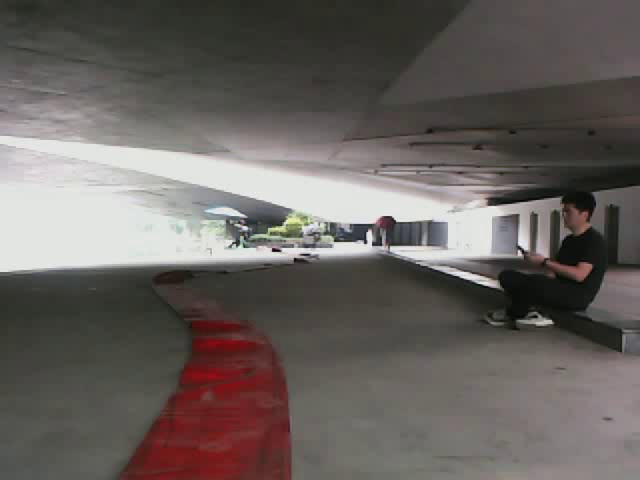
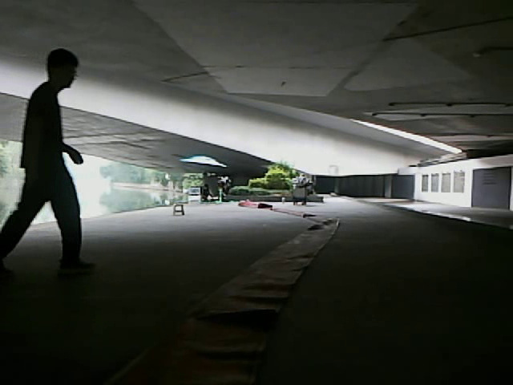
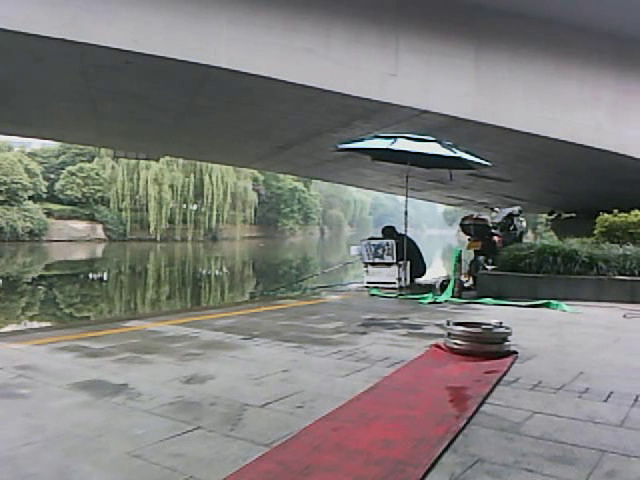
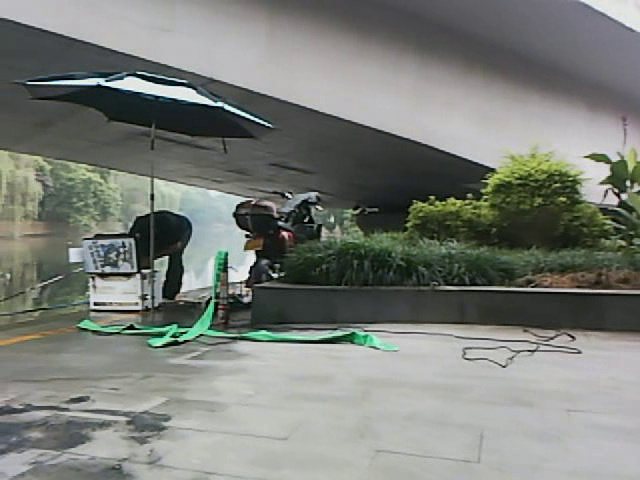

先统一：机器人要跟随哪一条“水带”
这些都来自当前 388 张候选集。后半段同时出现红色/棕色扁平水带、绿色水带和黑色线缆，必须先确定唯一标注目标。




当画面中出现多条软管或线缆时，哪一种是训练标签的唯一目标？
点击一个选项作视觉记录，并在 Codex 对话中回复 A、B 或 C。
这些都来自当前 388 张候选集。后半段同时出现红色/棕色扁平水带、绿色水带和黑色线缆，必须先确定唯一标注目标。




点击一个选项作视觉记录，并在 Codex 对话中回复 A、B 或 C。